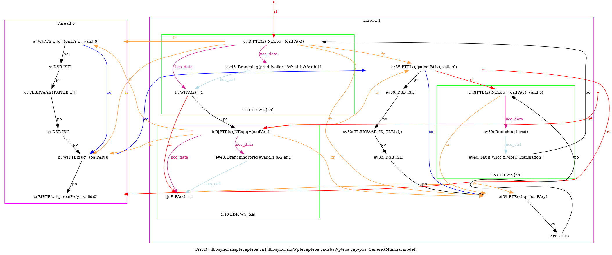
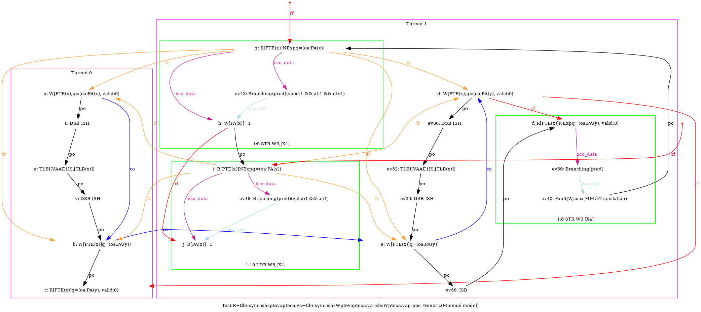
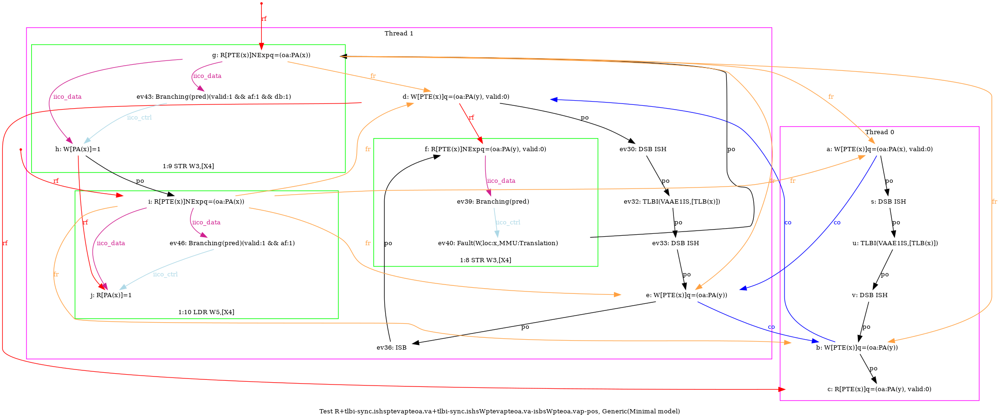
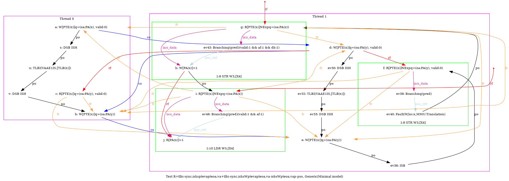

   …
AArch64 R+tlbi-sync.ishsptevapteoa.va+tlbi-sync.ishsWptevapteoa.va-isbsWpteoa.vap-pos
"TLBI-sync.ISHsWWPteVAPteOA.VA CoePteOA.VAPteVA TLBI-sync.ISHsWWPteVAPteOA.VA ISBsWWPteOA.VAP PosWR FrePPteVA"
Variant=imprecise
Cycle=PosWR FrePPteVA TLBI-sync.ISHsWWPteVAPteOA.VA CoePteOA.VAPteVA TLBI-sync.ISHsWWPteVAPteOA.VA ISBsWWPteOA.VAP
Relax=[PteVA,TLBI-sync.ISHsWW,PteOA,PteVA] [PteVA,TLBI-sync.ISHsWW,PteOA,PteVA,ISBsWW]
Safe=Fre Coe PosWR
Generator=diy7 (version 7.56+02~dev)
Com=Co Fr
Orig=TLBI-sync.ISHsWWPteVAPteOA.VA CoePteOA.VAPteVA TLBI-sync.ISHsWWPteVAPteOA.VA ISBsWWPteOA.VAP PosWR FrePPteVA
{
pteval_t 0:X5;
int x=0; int y=4;
0:X0=PTE(x); 0:X1=(oa:PA(x), valid:0); 0:X2=(oa:PA(y)); 0:X3=x;
1:X0=PTE(x); 1:X1=(oa:PA(y), valid:0); 1:X2=(oa:PA(y)); 1:X4=x;
}
P0 | P1 ;
STR X1,[X0] | STR X1,[X0] ;
LSR X4,X3,#12 | LSR X6,X4,#12 ;
DSB ISH | DSB ISH ;
TLBI VAAE1IS,X4 | TLBI VAAE1IS,X6 ;
DSB ISH | DSB ISH ;
STR X2,[X0] | STR X2,[X0] ;
LDR X5,[X0] | ISB ;
| MOV W3,#1 ;
| STR W3,[X4] ;
| LDR W5,[X4] ;
exists (0:X5=(oa:PA(y), valid:0) /\ 1:X5=1 /\ fault(P1,x,MMU:Translation))